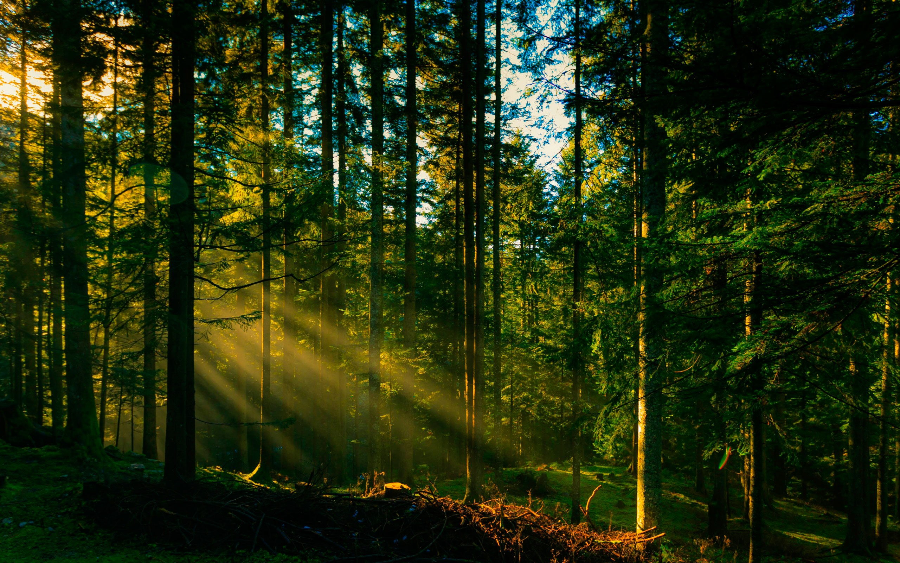

Дерева
Ягоди
ГрибиЛіс — це сукупність землі, рослинності, в якій домінують дерева та чагарники, тварини, мікроорганізми та інші природні компоненти, що в своєму розвитку біологічно взаємопов'язані, впливають один на одного і на навколишнє середовище.[1] Вивченням законів життя та розвитку лісу, його відновлення, вирощування та формування систем рубок, підвищення комплексної продуктивності лісових насаджень, займається лісівництво як наука.
